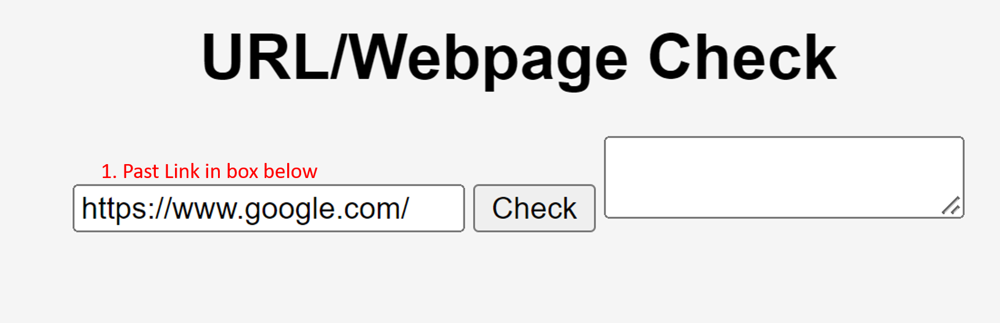

CHANGE SIZE OF SITE TEXT

You see that big orange arrow? Good!
It is pointing to the round part of the toggle, which is located in the TOP LEFT of your screen
Drag it to change the size of your text!
CHECK URL

First, copy the url
Second, click the button that says, "Check"